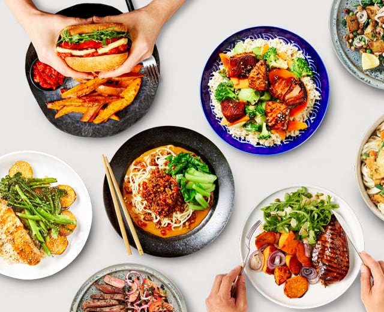

Food and Cooking

- What is your favorite food? And why?
- Which country, according to your opinion, has the best dishes?
- What is the worst thing you've ever tasted?
- Do you like to cook?
- What do you like to cook?
- How often do you cook?
- What are the advantages or disadvantages of cooking?
- Where do you get ingredients for cooking?
- What do you think about organic food?
- Do you eat only organic food?
- Your opinion.......